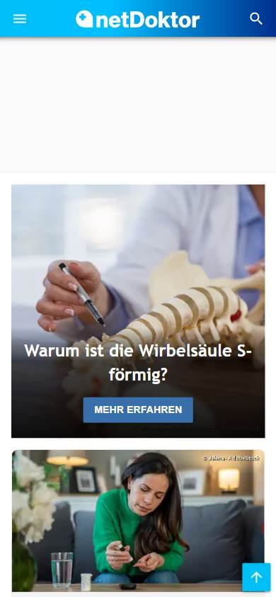
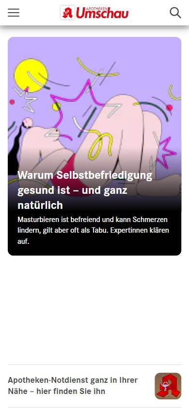

Salud
Los seleccionados
Los tres sitios más visitados de Alemania, según estadísticas de tráfico.
En resumen: lo que hacen los líderes
La pantalla de inicio de cada uno


Estilo visual
Colores, imágenes, tipografía y cuánta información muestran.
Tu estilo visual debería…
- Un color de marca + blanco, mucho aire y fotos cálidas de personas.
Lo que tienen en común: Paletas de un color de marca con blanco, fotos grandes y cálidas o ilustraciones amables, y mucho aire.
La paleta de cada uno
Medida sobre la primera pantalla. Los colores de marca salen del header; el resto muestra cuánto espacio ocupa cada color.
Así lo resuelve cada uno
Ficha comparativa
| Aspecto | AOK | NetDoktor | Apotheken Umschau |
|---|---|---|---|
| Paleta | Acotada: verde + blanco + verde lima | Acotada: azul + blanco | Acotada: rojo + blanco + pastel |
| Imágenes | Foto grande de personas | Foto grande de profesional | Ilustraciones y fotos medianas |
| Tipografía | Sin serifa, titular grande en blanco | Sin serifa | Sin serifa |
| Densidad | Baja | Baja | Media |
Header
La franja de arriba con el logo y los accesos.
Tu header debería…
- Logo a la izquierda en tu color de marca.
- A la derecha, buscar y un botón de color para la acción principal (hacerse socio, suscribirse).
Lo que tienen en común: Logo a la izquierda con el color de la marca bien presente y, a la derecha, buscar y una acción principal.
Así lo resuelve cada uno
Ficha comparativa
| Aspecto | AOK | NetDoktor | Apotheken Umschau |
|---|---|---|---|
| Fondo | Blanco | Azul de marca (degradé) | Blanco |
| Logo | Verde, a la izquierda | Blanco sobre azul, a la izquierda | Rojo, a la izquierda |
| A la derecha | Login, contacto, buscar + botón verde «Mitglied werden» | Redes, newsletter y buscar | Buscador |
Menú y categorías
Cómo se organizan las secciones.
Tu menú y categorías debería…
- Secciones por tema de salud: síntomas, enfermedades, medicamentos.
Lo que tienen en común: Una fila de secciones de texto con nombres de temas de salud que la gente busca.
Así lo resuelve cada uno


Ficha comparativa
| Aspecto | AOK | NetDoktor | Apotheken Umschau |
|---|---|---|---|
| Formato | Fila de texto debajo del header | Fila de texto sobre la franja azul | Fila en mayúsculas debajo del logo |
| Secciones | Prestaciones, cuotas, salud | Síntomas, enfermedades, medicamentos, diagnóstico | Enfermedades, medicamentos, terapia, familia |
Primera pantalla
Lo primero que se ve debajo del header.
Tu primera pantalla debería…
- Imagen grande y un titular en forma de pregunta o bienvenida cálida.
Lo que tienen en común: Imagen grande con un titular cálido o una pregunta de salud que invita a leer.
Así lo resuelve cada uno
Ficha comparativa
| Aspecto | AOK | NetDoktor | Apotheken Umschau |
|---|---|---|---|
| Formato | Foto de personas a todo el ancho + titular de bienvenida | Foto grande con pregunta como titular | Ilustración grande + grilla de notas |
| Tono | Cálido | Explicativo («¿Por qué…?») | Explicativo |